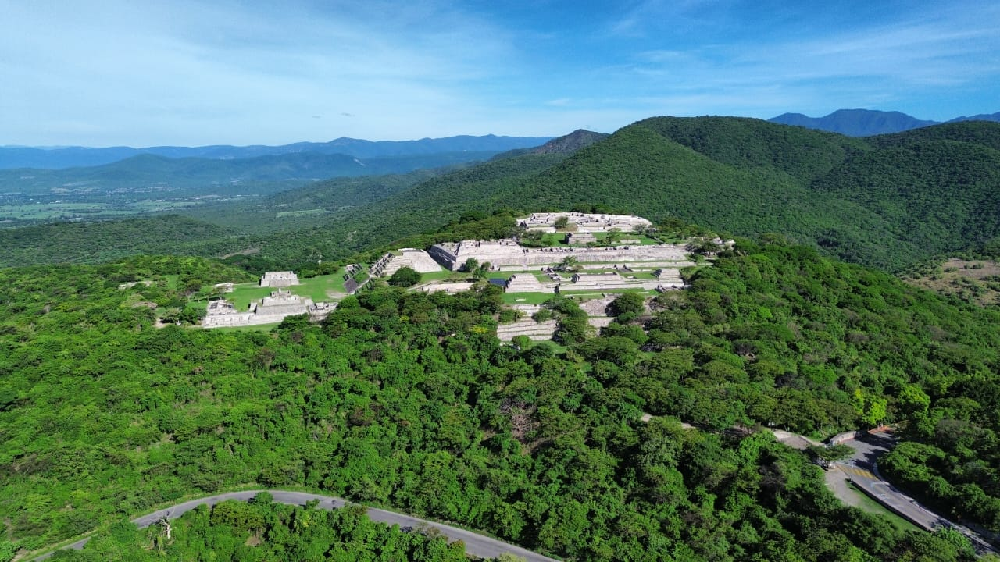
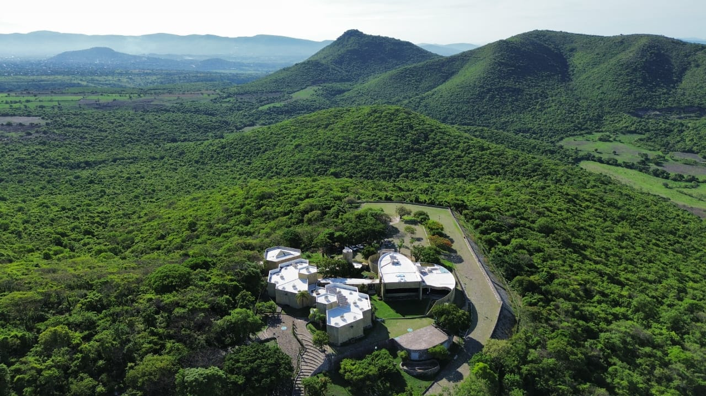
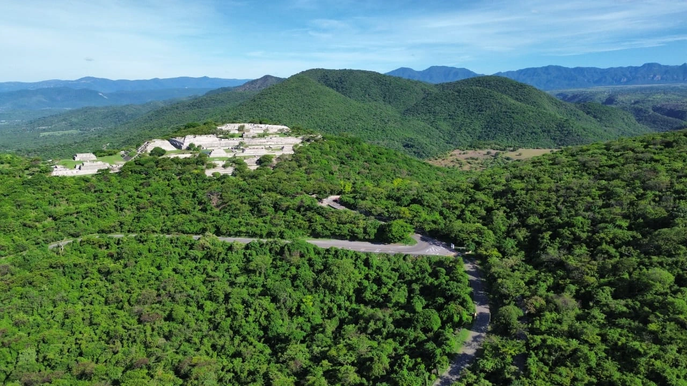

Xochicalco
La Casa de las Flores. Un viaje a uno de los centros urbanos más fascinantes del periodo Epiclásico mesoamericano.




Patrimonio de la Humanidad
Ubicada en el estado de Morelos, la zona arqueológica de Xochicalco es un testimonio excepcional de la reorganización política y cultural de Mesoamérica tras la caída de Teotihuacán. Su diseño urbano sobre terrazas artificiales demuestra un nivel avanzado de ingeniería y planeación.
🐍 Templo de la Serpiente Emplumada
La estructura más emblemática del sitio. Sus relieves esculpidos muestran deidades sentadas rodeadas de majestuosas serpientes emplumadas, representando una profunda mezcla de culturas mayas, zapotecas y nahuas.
🔭 Observatorio Astronómico
Una cueva subterránea modificada artificialmente. Durante el solsticio de verano, un haz de luz solar penetra a través de una chimenea natural, proyectándose en el suelo del lugar de forma espectacular.
⚽ Juegos de Pelota
Xochicalco cuenta con al menos tres canchas para el tradicional juego de pelota mesoamericano, evidencia de la gran importancia ritual y social de esta práctica en la ciudad fortificada.
Explora la Zona Arqueológica
Sumérgete en el sitio como si estuvieras ahí mismo con nuestra experiencia inmersiva.